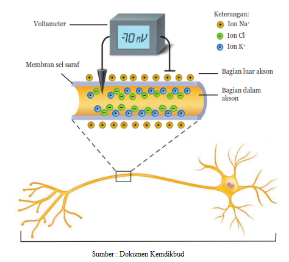

• Siswa dapat menjelaskan prinsip kelistrikan pada saraf manusia.
• Siswa dapat mengidentifikasi bagian sel saraf.
• Siswa dapat menyebutkan listrik statis di lingkungan sekitar.
Tubuh kita dapat menunjukkan adanya gejala kelistrikan, khususnya pada saraf yang disebabkan adanya impuls (sinyal pada sel saraf). kita dapat merasakan sakit ketika dicubit, karena rasa sakit tersebut muncul karena kulit kita menerima rangsangan berupa cubitan. Rangsangan ini selanjutnya diubah oleh sel saraf dalam kulit menjadi impuls. Kajian yang khusus mempelajari tentang aliran impuls pada tubuh manusia disebut biolistrik. Tegangan (beda potensial) pada tubuh berbeda dengan yang kita bayangkan seperti listrik rumah tangga. Kelistrikan pada tubuh hanya berkaitan dengan komposisi ion yang terdapat dalam tubuh, bukan listrik yang mengalir seperti pada kabel listrik di rumah-rumah.
Sel saraf menghantarkan impuls karena terjadi pertukaran ion-ion di dalam dan di luar membran sel saraf. Pertukaran ion tersebut tidak dapat terjadi begitu saja tanpa adanya rangsangan. Rangsangan yang cukup kuat dapat mengaktifkan pompa ion, sehingga menyebabkan terjadinya pertukaran ion. Saat sel saraf tidak menghantarkan impuls, muatan positif Na melingkupi bagian luar membran sel.